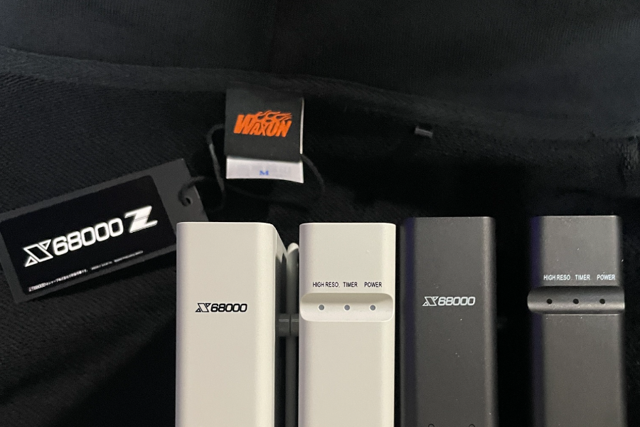
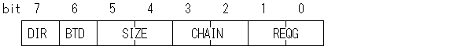
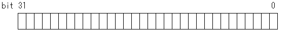

DMA "CPUを介さずデータ転送する魔法" 第3話

2024-03-23 投稿：
前回に引き続き、DMAに関する学習内容のアウトプットをさせていただきます。
よろしければ、お付き合いください。
前回は、DMAC(63450)を使用するにあたり、設定が必要な項目を洗い出して方針を定めました。
今回は、この方針に基づき各レジスタの詳細を確認しながら具体的な設定値を決めていきたいと思います。
レジスタのアドレス
では、いよいよ今回はDMAC内のレジスタに割り当てられている具体的なアドレス値を確認していきましょう。
まず、前回お話した通りDMAC(63450)にはチャンネル#0～#3の4つのチャンネルが存在します。
これら各チャンネルには"ベースアドレス"という物が割り当てられており、以下のようになっています。
ベースアドレス チャンネル番号
0xE84000 チャンネル#0
0xE84040 チャンネル#1
0xE84080 チャンネル#2
0xE840C0 チャンネル#3
各チャンネル内には同じ名前のレジスタが、それぞれ存在しています。
各レジスタには "オフセット値" という物がありまして、各チャンネルのベースアドレスに各レジスタのオフセット値を足せば、そのチャンネルにおける、そのレジスタのアドレスとなります。
各レジスタのオフセット値と名前を以下に列挙します。
オフセット値 レジスタ名
+0x00 CSR チャンネルステータスレジスタ (R/W)
+0x01 CER チャンネルエラーレジスタ (R)
+0x04 DCR デバイスコントロールレジスタ (R/W)
+0x05 OCR オペレーションコントロールレジスタ (R/W)
+0x06 SCR シーケンスコントロールレジスタ (R/W)
+0x07 CCR チャンネルコントロールレジスタ (R/W)
+0x0A MTC メモリトランスファ・カウンタ (R/W)
+0x0C MAR メモリアドレスレジスタ (R/W)
+0x14 DAR デバイスアドレスレジスタ (R/W)
+0x1A BTC ベーストランスファ・カウンタ (R/W)
+0x1C BAR ベースアドレスレジスタ (R/W)
+0x25 NIV ノーマルインタラプトベクタ (R/W)
+0x27 EIV エラーインタラプトベクタ (R/W)
+0x29 MFC メモリファンクションコード (R/W)
+0x2D CPR チャンネルプライオリティレジスタ (R/W)
+0x31 DFC デバイスファンクションコード (R/W)
+0x39 BFC ベースファンクションコード (R/W)
+0x3F GCR ジェネラルコントロールレジスタ (R/W) ※ GCRは チャンネル#3の空間にだけ存在します。
前回、チャンネル#2を使用する方針を定めたのでチャンネル#2を例にして考えてみましょう。
チャンネル#2のCSR(チャンネルステータスレジスタ)のアドレスは、0xE84080。
チャンネル#2のCER(チャンネルエラーレジスタ)のアドレスは、0xE84081。
チャンネル#2のDCR(デバイスコントロールレジスタ)のアドレスは、0xE84084。
:
～省略～
:
チャンネル#2のBFC(ベースファンクションコード)のアドレスは、0xE840B9。
という具合ですね。
ちょっと特殊なレジスタが1つあるのを忘れていました。
オフセットが+0x3FのGCRは、チャンネル#3の空間である0xE840FFにだけ存在します。
こちらは、オートリクエストモード(限定速度)になっている全てのチャンネルが影響を受けます。
(今回の方針ではオートリクエストモード(最大速度)を使用するので影響を受けません)
あと、各レジスタ名の後ろに(R/W)とか(R)とか書いてありますよね？
これは各レジスタの読み書きに関する属性です。
R/W : 読み出しと書き込みが可能
R : 読み出し専用
W : 書き込み専用
DMAC(63450)にはW属性(書き込み専用)は居ませんね。
他のデバイスのレジスタには居る事があるかもなので、一応書いてみました。
DMAC(63450)はCER(チャンネルエラーレジスタ)がR属性なだけで、あと他は全てR/W属性ですね。
各レジスタの詳細
さて、各レジスタのアドレスと名前が分かったので、次は各レジスタ中にある"ビット"を見ていきましょう。
ここから先は各レジスタ毎に、以下のフォーマットで見出しを付けています。
レジスタ名 (チャンネル#2におけるアドレス) レジスタ名カタカタ表記 (読み書き属性)
各ビットにも名前が付いており、それぞれのビットが様々な設定を受け持っています。
各ビットの幅は様々で、1ビットで成り立つ物から32ビットの幅を使う物まで色々とあります。
今から、これらビットの1つ1つが、どのような設定を行う場所なのかを確認しながら設定値を決めていきます。
CSR (0xE84080) チャンネルステータスレジスタ (R/W)

bit:7 COC チャンネルオペレーションコンプリート
0：チャンネル動作未完了
1：チャンネル動作完了
当該チャンネルがDMA転送を完了すると自動的に'1'になります。
bit 6 BTC ブロックトランスファコンプリート
0：ブロック転送未完了
1：ブロック転送完了
複数ブロック転送関連なので今回は気にしません。
bit 5 NDT ノーマルデバイスターミネーション
0：DONE信号によるデバイス停止ではない
1：DONE信号による正常なデバイス停止
DONEピン関連なので今回は気にしません。
bit 4 ERR エラービット
0：エラーなし
1：エラー発生
エラーの有無だけ教えてくれます。
エラーの種類は、この後に紹介するCERレジスタのERROR CODEビットで確認できます。
bit 3 ACT チャンネルアクティブ
0：チャンネル非アクティブ
1：チャンネルアクティブ(動作中)
転送を開始すると'1'になり、転送が完了すると'0'になります。
COCビットとの違いはCOCは手動でクリアする物に対してACTは動作中だけ'1'になります。
今回は転送完了をbit7のCOCで確認するので、ここは別に気にしない事にします。
bit 2 DIT DONE入力トランジッション
0：DONE入力はない
1：OCRのBTDビットが'1'のときにDONE入力があった
DONEピン関連なので今回は気にしません。
bit 1 PCT PCLトランジッション
0：PCLの立下り(High→Lowへの変化)はない
1：PCLの立下り(High→Lowへの変化)が発生した
PCLピン関連なので今回は気にしません。
bit 0 PCS PCLラインステータス
0：PCL="Low"
1：PCL="High"
PCLピン関連なので今回は気にしません。
チャンネルの動作状態を示すレジスタです。
転送が完了したか、もしくはエラーが出ていないかの確認に使用します。
第1話のコードを見て下さい。
while(!(DMAC2CH_CSR & 0x90)); として完了(bit7)または エラー(bit4)が1になったら抜けるようになっていますね。
このレジスタは'1'を書くと'0'にクリアされます。
COC, BTC, NDT, ERR, ACTビットが'1'のまま転送を始めようとすると、エラーになり転送できません。
InsideX68000のサンプルコードを見ると、全てのサンプルで必ずDMAC使用前にオール1、即ち0xFFを書き込んでクリアしています。
という訳で、CSRの設定値は0xFFとします。
CER (0xE84081) チャンネルエラーレジスタ (R)
bit:7～5 リザーブビット
常に0が読み出される。
bit:4～0 ERROR CODE エラーコード
00000：エラーなし
00001：コンフィグレーションエラー
→ 動作不可能な設定の組み合わせになっている場合に発生。
00010：動作タイミングエラー
→ DMAC(63450)の使用手順を間違えている場合に発生。
00011：(未使用)
001rr：アドレスエラー
→ ワードやロングワードの転送を奇数番地から行おうとした場合に発生。
010rr：バスエラー
→ DMAがバスを使用しているときにバスエラーが発生した場合に発生。
011rr：カウントエラー
→ MTC(転送回数)に0を設定して転送を行おうとした場合に発生。(※1)
その他の発生条件は複数ブロック転送(今回は行わない)に関連するもの。
10000：外部強制停止
→ PCL端子関連なので気にしない。
10001：ソフトウェア強制停止
→ STRビットかACTビットが'1'のときにSABビットが'1'になった場合に発生。
rr=01：メモリアドレス/メモリカウンタ
rr=10：デバイスアドレス
rr=11：ベースアドレス/ベースカウンタ
R属性なのでRead onlyつまり読み取り専用(値を見るだけ)のレジスタです。
CSRのERRビットが1になったとき、このレジスタにエラーの内容を示すコード入ります。
CSRのフラグをクリアしたタイミングで、このエラーコードも0にクリアされます。
確認環境：CompactXVI, XM6TypeG ver.3.36, X68000 Z EAK/PE F.W ver.1.6.2
転送に失敗した場合、このレジスタのエラーコードを確認すれば、ある程度は原因の目星がつけられます。
注意点として、2024/03/23 現在、X68000 Z EAK/PE F.W ver.1.6.2 では、エラーコードが実機と異なる値になる場合があります。
また、エラー時に実機では転送を中止しますが、Zは中途半端な転送を行いデータを破壊してしまうパターンもあります。
Z-CLUBに調査結果を投稿しています。
X68000 Z(FW.ver.1.6.2)はDMA転送エラー時の挙動が実機と異なる
Read onlyのためCERに設定値はありません。
DCR (0xE84084) デバイスコントロールレジスタ (R/W)
bit:7～6 XRM エクスターナルリクエストモード
00：バースト転送モード
01：未使用
10：ホールドなし サイクルスチールモード
11：ホールド付き サイクルスチールモード
外部要求転送モードでない場合は、ここの設定は無効です。
今回の方針では外部要求転送モードは使いません。
InsideX68000のサンプルコードに習い今回は'00'を設定します。
bit 5～4 DTYP デバイスタイプ
00：68000 バスタイプ
01：6800 バスタイプ
10：ACK付きデバイス
11：ACKとREADY付きデバイス
InsideX68000によると、X68000において通常は'00'以外を指定することはないとの事。
素直に'00'を設定する事にします。
bit 3 DSP デバイスポートサイズ
0：8ビットポート
1：16ビットポート
接続先のデバイスが8ビットポートなのか、16ビットポートなのかで設定値が変わります。
FD, HD, ADPCMは8ビットポートですが、メモリは16ビットポートです。
今回はメモリ→メモリ転送しか行わない方針なので通常は16ビットポートを使用します。
色々と転送のされ方にクセがあるものの8ビットポートでメモリ転送する事も可能です。
今回は一応、DMA転送開始前に選べるようにしておこうと思います。
8ビットポートの転送におけるクセについては、またそのうち別で書くかもです。
bit 2 リザーブビット
常に0を書き込む。
bit 1～0 PCL ペリフェラルコントロールライン
00：ステータス入力
01：インタラプト付きステータス入力
10：1/8スタートパルス
11：ABORT(強制終了)入力
PCLピン関連なので今回は気にしません。
InsideX68000のサンプルコードに習い今回は'00'を設定します。
という訳で、DSP(デバイスポートサイズ)の設定以外のビットは全て'0'を書き込む事になりました。
なので、DCR全体の設定値としては0x00(8ビットポート)か、0x08(16ビットポート)のどちらかになりますね。
DCRの設定値は引数で選択できるようにします。
OCR (0xE84085) オペレーションコントロールレジスタ (R/W)

bit:7 DIR ディレクション
0：メモリ→デバイス/MAR → DAR
1：デバイス→メモリ/DAR → MAR
今回はメモリ→メモリ転送を行いますがMARとDAR共にメモリのアドレスを指定できます。
'0'を指定するとMARが転送元、DARが転送先になります。
'1'を指定するとDARが転送元、MARが転送先になります。
少し弄った感じDSPが16ビットポートであれば、どちら向きに転送しても問題なさそうです。
しかし、8ビットポートで使用する際にDAR→MARだと何か変な動きをしました。
(ちょっと理解できない動作をしてました。。。)
という訳で、ここの設定値は'0'のMAR→DARで固定します。
bit 6 BTD DONE付き複数ブロック転送
0：通常動作
1：DONE入力があると、強制的に次のブロック転送を行う
DONEピン関連かつ複数ブロック転送関連なので今回は気にしません。
InsideX68000のサンプルコードに習い'0'を設定します。
bit 5～4 SIZE オペランドサイズ
00：バイト(8bit)
01：ワード(16bit)
10：ロングワード(32bit)
11：パックなし ポートサイズ8bit バイト(8bit)転送
"オペランドサイズ"とは、単に1回の転送サイズの事です。
char hoge[10]を全部何処かに転送したいとしましょう。
その場合は転送サイズ(オペランド)が8bitで、転送回数が10回ですね。
実はchar hoge[10]を転送サイズ16bit、転送回数5回とかも可能です。
転送サイズが8bit以外の場合は転送元と転送先のアドレスが共に偶数でなくてはなりません。
ここはもちろん、引数で設定できるようにしないといけませんね。
あと、'11'のパックなし～は何だ？って思いますよね。
'00'バイト(8bit)設定の場合、DMACさんは勝手に可能な限りデータをまとめようとします。
これを"パック動作"と言うらしいです。
しかし、この動作が邪魔になる事があるらしく'11'でパック禁止にできる訳です。
チャンネル#2以外はFD,HD,ADPCMが接続されていますが彼らはパックなし設定です。
試してみると'11'パックなしの場合は、DSPが8ビットポートでないとエラーになりました。
ちょっと色々と扱いにくいですしメリットもよく分かりません。
これらの背景により今回はバイト(8bit),ワード(16bit),ロングワード(32bit)の三択にします。
まぁパック禁止にしたくなったら、いつでも変更できますし。
bit 3～2 CHAIN チェイニングオペレーション
00：チェイン動作なし
01：(未使用)
10：アレイチェイニング
11：リンクアレイチェイニング
複数ブロック転送関連なので今回は気にしません。
'00'チェイン動作なしを設定しておきます。
bit 1～0 REQG リクエストジェネレーションメソッド
00：オートリクエスト限定速度
01：オートリクエスト最大速度
10：外部要求転送(REQラインによる)
11：最初の転送はオートリクエスト 2番目以降は外部要求転送
今回、オートリクエストモード(最大速度)を使用する方針なので、ここには'01'を設定します。
SIZE(オペランドサイズ)が'00'か'01'か'10'三択、REQG(チェイニングオペレーション)が'01'、他は全て0で固定ですね。
なので、OCRの設定値は、0x01(転送サイズ1バイトのとき)か、0x11(転送サイズ2バイトのとき)か、0x21(転送サイズ4バイトのとき)の何れかになります。
ここも引数で選択できるようにしましょう。
SCR (0xE84086) シーケンスコントロールレジスタ (R/W)
bit 7～4 リザーブビット
常に0を書き込む。
bit 3～2 MAC メモリアドレスレジスタカウント
00：MAR(メモリアドレスレジスタ)は変化しない
01：転送毎にMAC(メモリアドレスレジスタ)の値は増加
10：転送毎にMAC(メモリアドレスレジスタ)の値は減少
11：未使用
bit 1～0 DAC デバイスアドレスレジスタカウント
00：DAR(デバイスアドレスレジスタ)は変化しない
01：転送毎にDAR(デバイスアドレスレジスタ)の値が増加
10：転送毎にDAR(デバイスアドレスレジスタ)の値が減少
11：未使用
転送元と転送先が転送毎にアドレスの増減を行うか指定します。
第1話のコードのように単純にコピーしたいだけならば転送元、転送先共に増加する設定になります。
でも、やっぱり色々と指定できた方が良いですね。
例えばchar hoge = 0;とか書き、hogeのアドレスを転送元かつ転送毎にアドレスが変化しないよう指定します。
転送先はVRAMなど指定して転送毎にアドレスが増加するようにした場合、高速クリアとかができそうですね。
あと思いつく所だとWindowsでお絵描きしたBMP画像ファイルをX68kで表示しようとした場合ですね。
画像データが末尾から逆順に入っているので、末尾から転送毎にアドレスを減少させてみると良いかもですね。
使い勝手を考えて、ここも引数で指定できるようにしましょう。
CCR (0xE84087) チャンネルコントロールレジスタ (R/W)

bit:7 STR スタートオペレーション
1：動作スタート
通常は'0'で、これを'1'にすることでDMA転送が開始されます。
ここに'0'を書き込んでも動作は停止しません。
もし強制停止させたい場合はSABビットを'1'にします。
また、一時停止させたい場合はHLTビットを'1'にします。
(今回は、このような操作を行わないようにしました)
無意味ですが'0'を設定しておく事にします。
bit:6 CNT コンテニューオペレーション
0：コンテニュー動作なし
1：コンテニュー動作あり
継続動作を行わせるときに使用するビットです。
今回は、複数ブロックの転送は行わない方針のため気にしません。
'0'を設定しておきましょう。
bit:5 HLT ホルトオペレーション
0：チャンネル動作の再開
1：チャンネル動作の一時停止
転送動作中に'1'にすると一時的に動作を停止します。
外部要求転送やバースト転送を行う場合には留意すべき事がありますが割愛します。
'0'を設定しておきましょう。
bit:4 SAB ソフトウェアアボート
1：チャンネル動作を強制的に終了させる
このビットは自動的にクリアされるので常時'0'が読み出されます。
無意味ですが'0'を設定しておく事にします。
bit:3 INT インタラプトイネーブル
0：割り込み発生禁止
1：割り込み発生許可
チャンネル動作終了時や、エラー発生時に割り込みを発生させるか指定します。
今回は割り込みに関して未使用の方針とします。
'0'を設定しておきましょう。
bit:2～0 リザーブビット
常に0を書き込む。
はい。全部のビットを0に設定する事になりましたので、CCRの設定値は0x00です。
MTC (0xE8408A) メモリトランスファ・カウンタ (R/W)

転送オペランド数を指定するレジスタです。
OCRのSIZEビットの項でも書きましたが、オペランドとは転送1回で送られる1つのデータのカタマリです。
従って、ここは単に転送回数を指定するレジスタという事になります。
ここに指定した値は、1回転送する度に1つ減り、0になると転送動作終了となります。
当然、ここの設定値は引数になりますね。
MAR (0xE8408C) メモリアドレスレジスタ (R/W)

デュアルアドレスモード、シングルアドレスモード、どちらのモードでも使用するレジスタです。
今回はOCR(オペレーションコントロールレジスタ)にて、転送元アドレスを格納する設定としています。
ここに指定したアドレスへのアクセスをスーパーバイザーモードにする設定はMFC(メモリファンクションコード)で行います。
こちらも当然、設定値は引数になりますね。
DAR (0xE84094) デバイスアドレスレジスタ (R/W)

デュアルアドレスモードでのみ使用するレジスタです。
今回はOCR(オペレーションコントロールレジスタ)にて、転送先アドレスを格納する設定としています。
ここに指定したアドレスへのアクセスをスーパーバイザーモードにする設定はDFC(デバイスファンクションコード)で行います。
当然、ここの設定値も引数になりますね。
BTC (0xE8409A) ベーストランスファ・カウンタ (R/W)

複数ブロックの転送のうち、アレイチェインモードを使用する際に転送ブロック数を格納する所です。
今回、複数ブロックの転送は行わない方針なので気にする必要がありません。
そもそも触らない事にします。
BAR (0xE8409C) ベースアドレスレジスタ (R/W)

複数ブロックの転送を行う際に必要な情報テーブルの先頭アドレスを設置する所です。
ここに指定したアドレスへのアクセスをスーパーバイザーモードにする設定はBFC(ベースファンクションコード)で行います。
今回、複数ブロックの転送は行わない方針なので気にする必要がありません。
そもそも触らない事にします。
NIV (0xE840A5) ノーマルインタラプトベクタ (R/W)
割り込み要求発生後CSRのエラービットが'0'(エラーなし)の場合、ここに設定したベクタ番号がCPUに出力されます。
今回は割り込みは使用しない方針ですので触る必要がありません。
チャンネル#2における初期値は0x68ですが、気にせずそのままにしておきましょう。
割り込みを使用したい場合は以下の記事をご覧ください。
https://dev.zuiki.com/project-z/community/post/detail/1534
EIV (0xE840A7) エラーインタラプトベクタ (R/W)EIV

割り込み要求発生後CSRのエラービットが'1'(エラー発生)の場合、ここに設定したベクタ番号がCPUに出力されます。
今回は割り込みは使用しない方針ですので触る必要がありません。
チャンネル#2における初期値は0x69ですが、気にせずそのままにしておきましょう。
割り込みを使用したい場合は以下の記事をご覧ください。
https://dev.zuiki.com/project-z/community/post/detail/1534
MFC (0xE840A9) メモリファンクションコード (R/W)

bit 7～3 リザーブビット
常に0を書き込む。
bit 2～0 FC0-2 ファンクションコード
000：未使用
001：ユーザーデータ
010：ユーザープログラム
011：未使用
100：未使用
101：スーパーバイザデータ
110：スーパーバイザプログラム
111：インタラプトアクノリッジ
MAR(メモリアドレスレジスタ)に設定したアドレスにアクセスする際のアクセス方法を指定します。
ユーザーモードなのか、スーパーバイザーなのか、データアクセスなのか、プログラム読み出しなのか。
あるいは割り込みへの応答サイクルなのかといった情報を示します。
InsideX68000のP.55にX68000では通常'101'スーパーバイザーデータにしておけば良いとあります。
第2話で定めた方針とも合致しますね。
という訳で、設定値は0x05とします。
CPR (0xE840AD) チャンネルプライオリティレジスタ (R/W)
bit 7～2 リザーブビット
常に0を書き込む。
bit 1～0 CP チャンネルプライオリティ
00：最高
01：2番目に高い
10：3番目に高い
11：最低
4つあるチャンネルのうち複数から同時に要求があった場合、優先度の高いチャンネルが動作します。
このレジスタで当該チャンネルの優先度を設定します。
同一優先順位のチャンネルが同時に要求された場合にどうなるのかInsideX68000に説明がありましたが、よく解りませんでした。
ちなみに、各チャンネルの設定値(Human68kでの初期値)は以下のようになっています。
チャンネル #0(FDD) → 0x00(最高)
チャンネル #1(HDD) → 0x02(3番目に高い)
チャンネル #2(ユーザー解放) → 0x03(最低)
チャンネル #3(ADPCM) → 0x01(2番目に高い)
InsideX68000の全てのサンプルコードで'11'(最低)を設定しているので、今回はそれに習って同じ値にします。
何か、I/Oに繋がっているヤツらの方が優先度高そうですしね。
という訳で、設定値は0x03とします。
DFC (0xE840B1) デバイスファンクションコード (R/W)
MFC(メモリファンクションコード)と同じ感じの物です。
MFCがMAR(メモリアドレスレジスタ)用であるのに対し、こちらはDAR(デバイスアドレスレジスタ)用の物になります。
MFCと同じ理由で'101'スーパーバイザーデータにします。
という訳で、設定値は0x05とします。
BFC (0xE840B9) ベースファンクションコード (R/W)

MFC(メモリファンクションコード)と同じ感じの物です。
MFCがMAR(メモリアドレスレジスタ)用であるのに対し、こちらはBAR(ベースアドレスレジスタ)用の物になります。
BARは複数ブロック転送を行う場合に使う物なので、今回の方針では使用しません。
なので、こちらも今回は触らない事にします。
GCR (0xE840FF) ジェネラルコントロールレジスタ (R/W)
bit 7～4 リザーブビット
常に0を書き込む。
bit 3～2 BT バーストタイム (1バーストあたりのDMAクロックサイクル数)
00：16クロック
01：32クロック
10：64クロック
11：128クロック
bit 1～0 BR バウンドウィズレシオ (バスの占有率)
00：50.00%
01：25.00%
10：12.50%
11：6.25%
このレジスタだけは特殊で、チャンネル#3の空間である0xE840FFにのみ存在しています。
オートリクエストモード(限定速度)になっている全てのチャンネルが影響を受けます。
しかし、今回の方針ではオートリクエストモード(最大速度)を使用するので影響を受けません。
なので、そもそも触らない事にします。
次回予告
今回は、各レジスタの詳細を確認しながら具体的な設定値を決めました。
次回は、今回決めた設定値を基にコーディングを行っていきます。
Link
・第1話 はこちら
・第2話 はこちら
・第3話 はこちら
・第4話 はこちら ← NEXT
・第5話 はこちら
Archive Note：
こちらは X68000 Z コミュニティサイト(Z-CLUB) 過去投稿を修正加筆したものです。
基本的に当時の状況に基づいた内容になっています。
元投稿：
https://dev.zuiki.com/project-z/community/post/detail/976
https://dev.zuiki.com/project-z/community/post/detail/977
https://dev.zuiki.com/project-z/community/post/detail/978
[EOF]